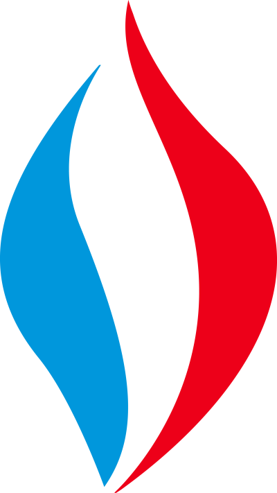
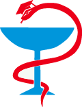
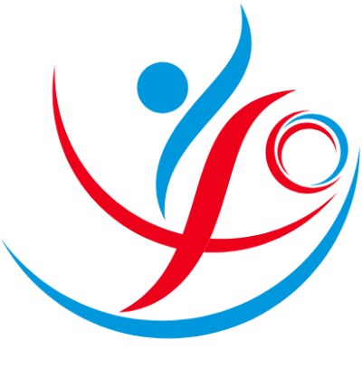
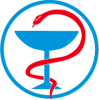
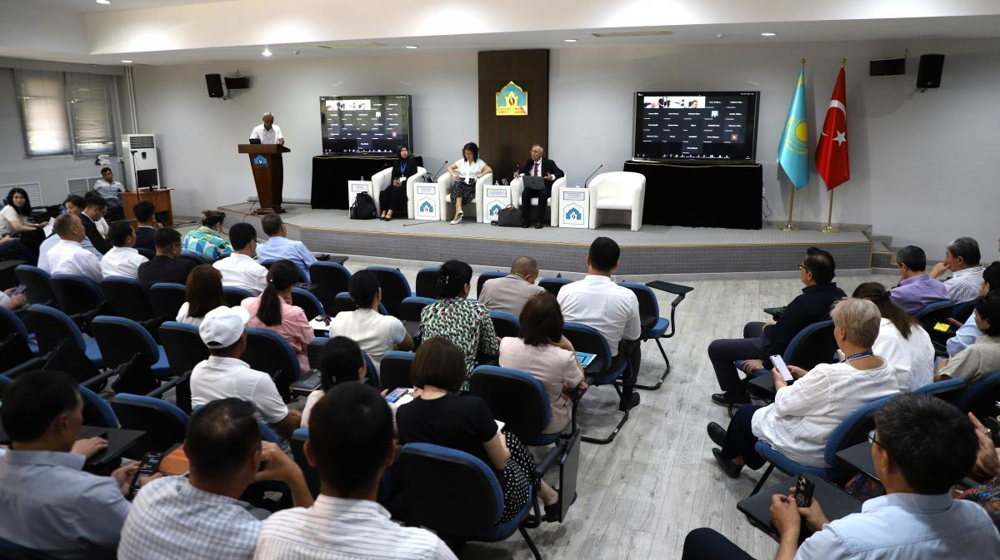
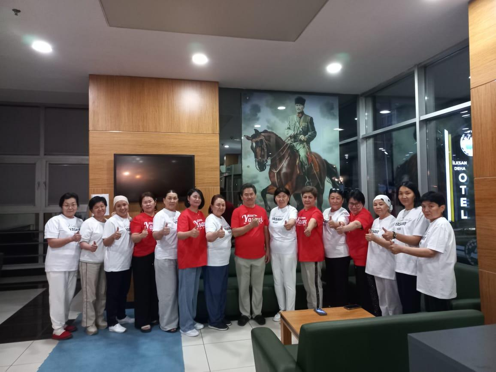
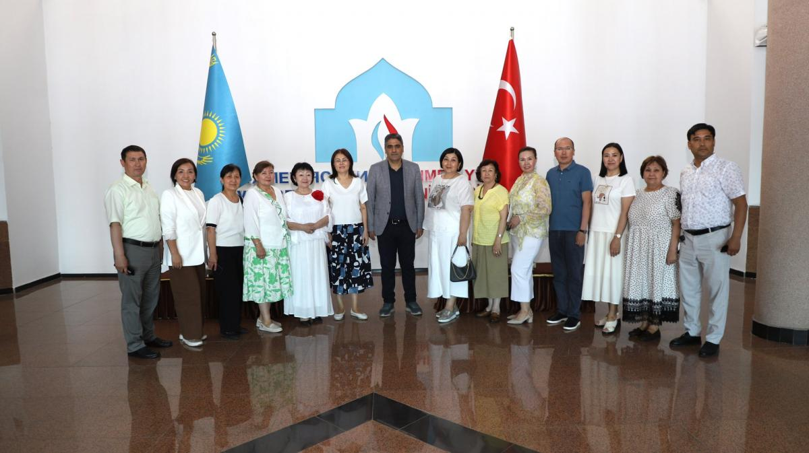
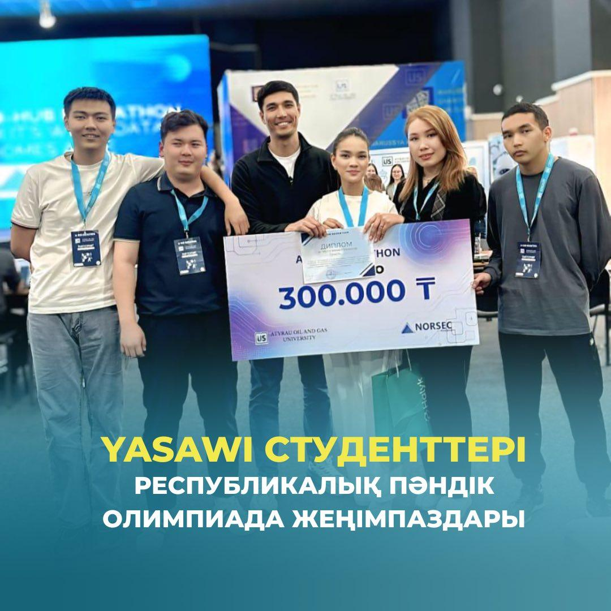

Шәкіртақы алу мүмкіндігі
Біздің университет өз студенттеріне түрлі ұйымдардан шәкіртақы ұсынады.
"Ілім — жүрек жарығы, ақылға шырақ"
Ахмет Ясауи
АХМЕТ ЯСАУИ УНИВЕРСИТЕТІНЕ ҚОШ КЕЛДІҢІЗ!
Біздің университет өз студенттеріне түрлі ұйымдардан шәкіртақы ұсынады.
Көптеген ғылыми салаларда мол еңбектерін жариялаған таңдаулы оқытушылар.
Іріктеулі кітаптарды қамтитын университет кітапханасы.

Дайындық орталығы Экономика, басқару және құқық факультеті Теология факультеті Әлеуметтік-гуманитарлық ғылымдар факультеті
Жоғары медициналық білімнен кейінгі білім беру Инженерия факультеті
Спорт және өнер факультеті
Медицина факультеті Бағдарламалар



1991 жылы құрылған Қожа Ахмет Ясауи атындағы Халықаралық қазақ-түрік университеті — Қазақстандағы алғашқы халықаралық жоғары оқу орындарының бірі. Университет түркі әлемінің жастарын біріктіріп, білім мен ғылымды дамытуға үлес қосады.
Терең тарихтан жарқын болашаққа →